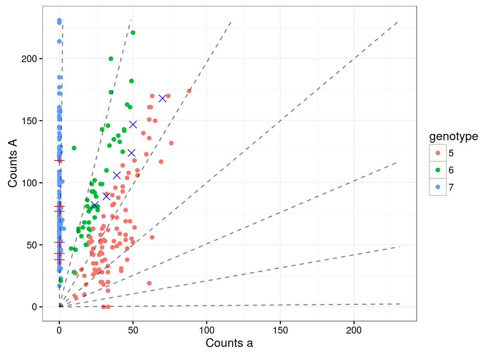
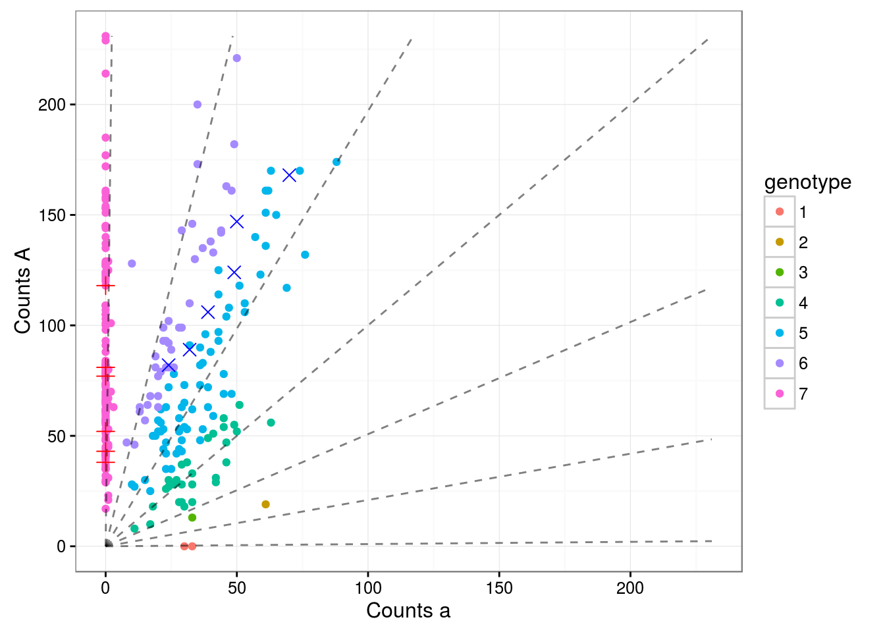
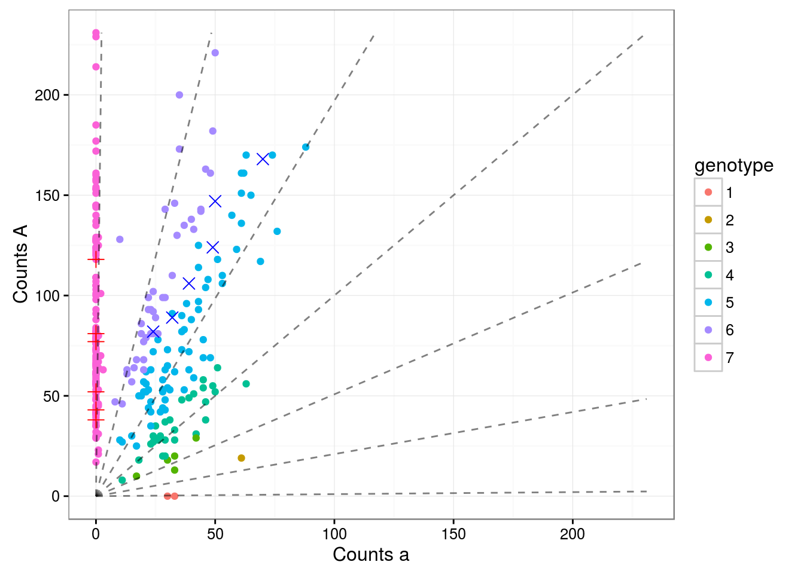

Last updated: 2016-11-17
Code version: 93a7887786838063fb2791ac55058472bc08ec2e
This is a template for writing reports with R Markdown.
library(updog)
set.seed(3452)
load("../data/subset_David.Rdata")
dat <- subset_david
lastp <- 12 ## number of final rows that are parentsupdog iterative procedure on 10th SNPWe now run updog both with and without parental genotypes.
cmat <- dat[[8]]
p1dat <- cmat[(nrow(cmat) - lastp + 1):(nrow(cmat) - lastp / 2), ]
p2dat <- cmat[(nrow(cmat) - lastp / 2 + 1):nrow(cmat), ]
odat <- cmat[1:(nrow(cmat) - lastp), ]
uout1 <- updog(ocounts = odat[, 1], osize = rowSums(odat), ploidy = 6,
p1counts = p1dat[, 1], p1size = rowSums(p1dat),
p2counts = p2dat[, 1], p2size = rowSums(p2dat), iterate = TRUE)2.419e-27 uout2 <- updog(ocounts = odat[, 1], osize = rowSums(odat), ploidy = 6,
iterate = TRUE)0.6807
0.3445
0.2274
0.1582
0.1146
0.08551
0.06498
0.04992
0.03868
0.03025
0.02391
0.0191
0.01542
0.01257
0.01034
0.008573
0.007157
0.006012
0.005076
0.004305
0.003666
0.003132
0.002683
0.002305
0.001984
0.001712
0.001479
0.00128
0.001109
0.0009617
0.000835
0.0007256
0.000631
0.0005491
0.0004781
0.0004165
0.000363
0.0003166
0.0002761
0.0002409
0.0002103
0.0001836
0.0001603
0.00014
0.0001223
0.0001068
9.337e-05 uout3 <- updog(ocounts = odat[, 1], osize = rowSums(odat), ploidy = 6)The parental genotypes are chosen with near certainty
round(uout1$p1postprob, digits = 2)aaaaaa Aaaaaa AAaaaa AAAaaa AAAAaa AAAAAa AAAAAA
0 0 0 0 0 0 1 round(uout2$p1postprob, digits = 2)aaaaaa Aaaaaa AAaaaa AAAaaa AAAAaa AAAAAa AAAAAA
0.02 0.00 0.00 0.00 0.00 0.00 0.98 round(uout3$p1postprob, digits = 2)[1] 0.14 0.14 0.14 0.14 0.14 0.14 0.14round(uout1$p2postprob, digits = 2)[1] 0 0 0 0 1 0 0round(uout2$p2postprob, digits = 2)[1] 0.14 0.14 0.14 0.14 0.14 0.14 0.14round(uout3$p2postprob, digits = 2)[1] 0.14 0.14 0.14 0.14 0.14 0.14 0.14Plot output
## one at a time procedure
labelvec <- apply(uout1$opostprob, 2, which.max)
pl <- plot_geno(ocounts = odat[, 1], osize = rowSums(odat),
p1counts = p1dat[, 1], p1size = rowSums(p1dat),
p2counts = p2dat[, 1], p2size = rowSums(p2dat),
ploidy = 6,
col = labelvec)
## iterative procedure
labelvec <- apply(uout2$opostprob, 2, which.max)
pl <- plot_geno(ocounts = odat[, 1], osize = rowSums(odat),
p1counts = p1dat[, 1], p1size = rowSums(p1dat),
p2counts = p2dat[, 1], p2size = rowSums(p2dat),
ploidy = 6,
col = labelvec)
## uniform prior
labelvec <- apply(uout3$opostprob, 2, which.max)
pl <- plot_geno(ocounts = odat[, 1], osize = rowSums(odat),
p1counts = p1dat[, 1], p1size = rowSums(p1dat),
p2counts = p2dat[, 1], p2size = rowSums(p2dat),
ploidy = 6,
col = labelvec)
What does a uniform prior on the parents mean for the prior on the children?
pvec <- rep(1/7, length = 7) ## prior on parents
qarray <- get_q_array(6)
harray <- sweep(qarray, MARGIN = 1, STATS = pvec, FUN = `*`)
harray <- sweep(harray, MARGIN = 2, STATS = pvec, FUN = `*`)
max(abs(qarray / 49 - harray))[1] 1.735e-18hl <- apply(harray, 3, sum)
hlaaaaaa Aaaaaa AAaaaa AAAaaa AAAAaa AAAAAa AAAAAA
0.0625 0.1250 0.1875 0.2500 0.1875 0.1250 0.0625 So a uniform prior on the q-array is actually a pretty strong prior on the children.
Try a uniform prior on the children
pout <- mapply(FUN = bin_post, odat[, 1], rowSums(odat), MoreArgs = list(prior = pvec))
labelvec <- apply(pout, 2, which.max)
pl <- plot_geno(ocounts = odat[, 1], osize = rowSums(odat),
p1counts = p1dat[, 1], p1size = rowSums(p1dat),
p2counts = p2dat[, 1], p2size = rowSums(p2dat),
ploidy = 6,
col = labelvec)pout <- mapply(FUN = bin_post, odat[, 1], rowSums(odat), MoreArgs = list(prior = hl))
labelvec <- apply(pout, 2, which.max)
pl <- plot_geno(ocounts = odat[, 1], osize = rowSums(odat),
p1counts = p1dat[, 1], p1size = rowSums(p1dat),
p2counts = p2dat[, 1], p2size = rowSums(p2dat),
ploidy = 6,
col = labelvec)But the prior doesn’t seem to change things that much.
sessionInfo()R version 3.3.1 (2016-06-21)
Platform: x86_64-pc-linux-gnu (64-bit)
Running under: Ubuntu 14.04.5 LTS
locale:
[1] LC_CTYPE=en_US.UTF-8 LC_NUMERIC=C
[3] LC_TIME=en_US.UTF-8 LC_COLLATE=en_US.UTF-8
[5] LC_MONETARY=en_US.UTF-8 LC_MESSAGES=en_US.UTF-8
[7] LC_PAPER=en_US.UTF-8 LC_NAME=C
[9] LC_ADDRESS=C LC_TELEPHONE=C
[11] LC_MEASUREMENT=en_US.UTF-8 LC_IDENTIFICATION=C
attached base packages:
[1] stats graphics grDevices utils datasets methods base
other attached packages:
[1] knitr_1.13 updog_0.1.0
loaded via a namespace (and not attached):
[1] Rcpp_0.12.6 digest_0.6.9 assertthat_0.1 grid_3.3.1
[5] plyr_1.8.3 gtable_0.2.0 formatR_1.4 magrittr_1.5
[9] evaluate_0.9 scales_0.4.0 ggplot2_2.1.0 stringi_1.0-1
[13] rmarkdown_0.9.6 labeling_0.3 tools_3.3.1 stringr_1.0.0
[17] munsell_0.4.3 yaml_2.1.13 compiler_3.3.1 colorspace_1.2-6
[21] htmltools_0.3.5